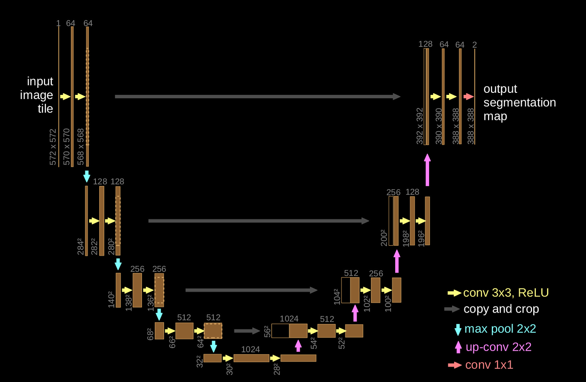
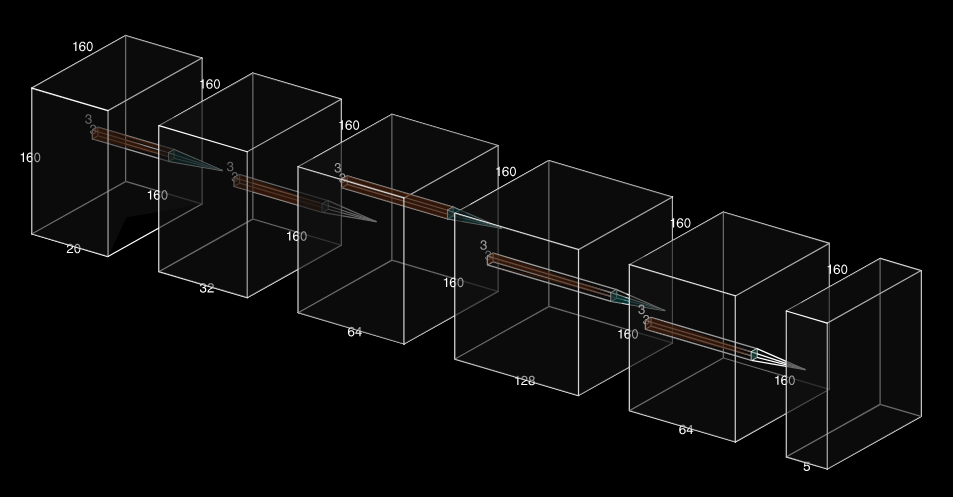
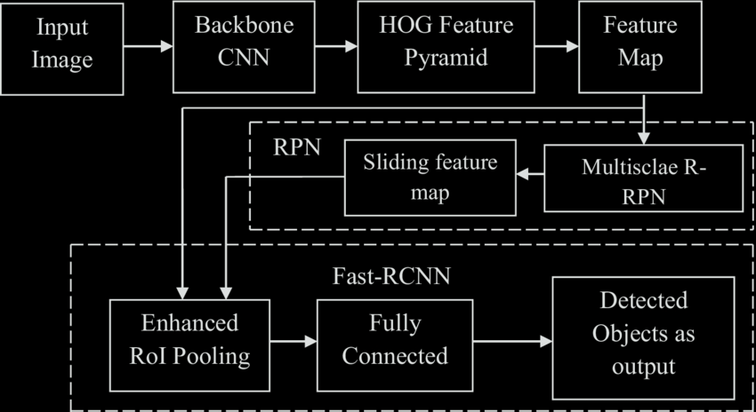

In this project we are aiming to design and implement a basic Autonomous driving system that can navigate a simulated environment in Carla Simulator. The system should be capable of lane following, obstacle avoidance and traffic sign recognition. The main aim of the project is to simulate a vehicle that can safely navigate its surrounding based on the real time sensor data. We have created different strategy to achieve the results, first we have started with the semantic segmentation to classify road, sidewalk, vehicles and pedestrian. We will extract the lane marking from the road and try to extract the curvature of the road in order to adjust the steering angle. Secondly, we have attempted to create the bird’s eye view using the four cameras attach on the four side of the view using the CNN model. Third model is to detect the vehicles, road, sidewalk and pedestrian using the Lidar attached at the top of the Ego vehicle, the CNN model takes the 3D tensor of size of defined voxel (volumetric data) and give 2D output containing the categorical representation of each class. Also, traffic signal and sign detection are incorporated to control the vehicle accordingly. This project not only limited to the Machine leaning algorithm but also required image processing, control system design and basic decision theory as well to achieve the results.
Model
U-Net Architecture
We used the U-Net architecture, a Convolutional Neural Network (CNN) built especially for pixel-wise segmentation, to accomplish the semantic segmentation tasks in this study. U-Net is very effective for tasks requiring exact boundary predictions, including identifying roads, vehicles, and pedestrians in an autonomous driving system, because of its encoder-decoder structure and skip links, which allow it to absorb both local and global contextual information.
VoxelCNN
Volumetric voxelized LiDAR data is processed by the second Convolutional Neural Network (CNN) used in this research, VoxelCNN, which classifies each voxel into the following categories: road, sidewalk, cars, pedestrians, and background. This model uses a CNN-based architecture that works on the voxelized 3D space to effectively manage the 3D structure of LiDAR point clouds. A 4D tensor of shape [batch size, channels, depth, height, breadth] is produced by the VoxelCNN after processing LiDAR data.
Faster RCNN
We used Faster R-CNN, a popular two-stage object identification model, to identify signs and traffic signals in the simulated environment. This design is excellent at locating things using bounding boxes, detecting them, and classifying them into predetermined categories.
Results
U-Net Architecture: Semantic Segmentation Results

VoxelCNN: LiDAR Segmentation Results

Faster RCNN: Traffic Signal Detection Results

Final Combination of Models

Raining Scenario Demo